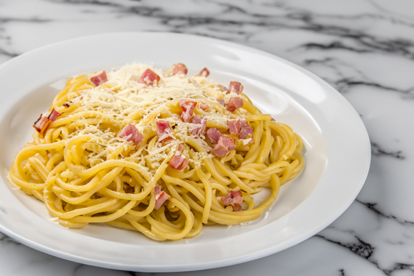

Spaghetti Carbonara

This easy pasta sauce will cook in about the same time it takes to cook some dried pasta in boiling salted water ‐ we're talking about quick and easy options here. These amounts serve 2 but are easy to scale up or down. Remember you want about 75g of dried pasta per person ‐ use whatever shape you've got. Or, check out my super-simple method for fresh pasta, using just flour and water.
Ingredients
- 150 g dried spaghetti
- 2 rashers of higher-welfare smoked streaky bacon
- 1/2 tbsp olive oil
- 2 free-range eggs
- 30 g Parmesan cheese, plus extra for grating
Steps
- Cook the pasta in a pan of boiling salted water according to the packet instructions.
- Slice the bacon and place in a non-stick frying pan on a medium heat with half a tablespoon of olive oil and a really good pinch of black pepper. Leave it to get super-golden and crispy, tossing occasionally, then turn off the heat.
- Meanwhile, beat the eggs in a bowl, then finely grate in the Parmesan and mix well.
- Use tongs to transfer your pasta straight into the pan and toss.
- Pour the Parmesan eggs into the pan, and keep everything moving, loosening with splashes of the pasta cooking water until you have a silky sauce. Make sure the pan is not too hot otherwise the eggs will scramble.
- Plate up the pasta, and finish with an extra grating of Parmesan.
Recipe from jamieoliver.com
Back to top